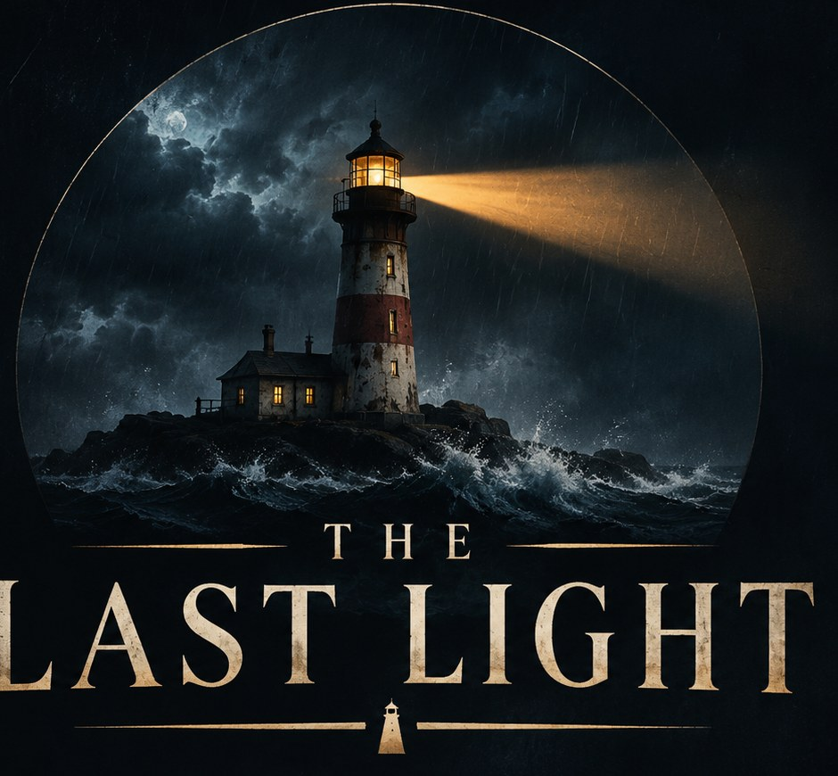
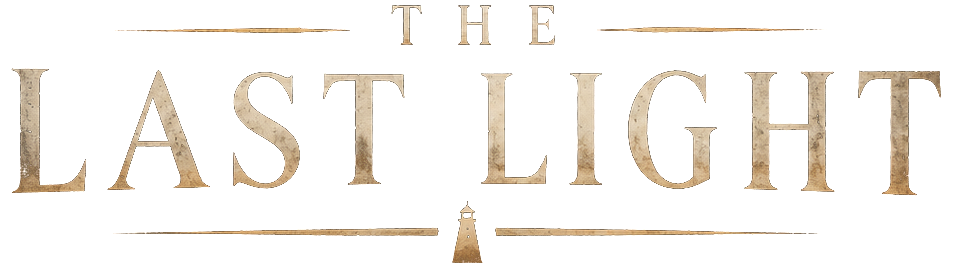
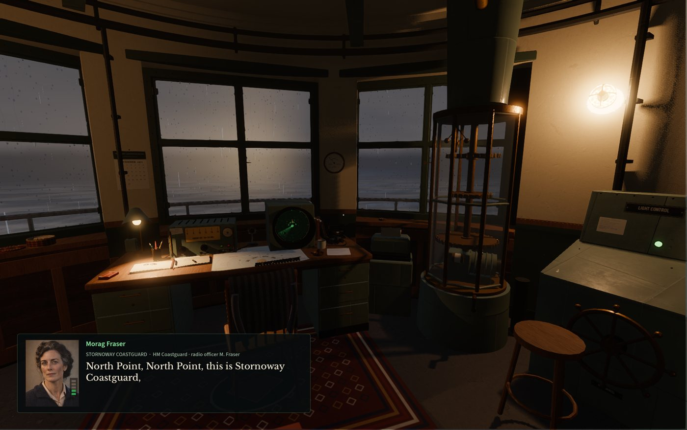
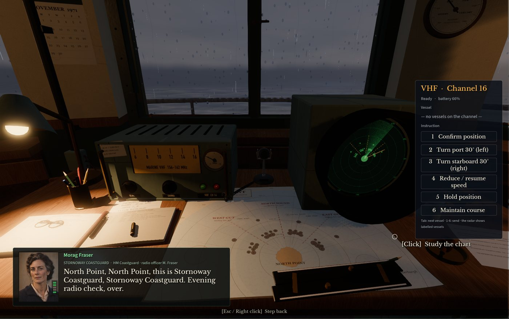
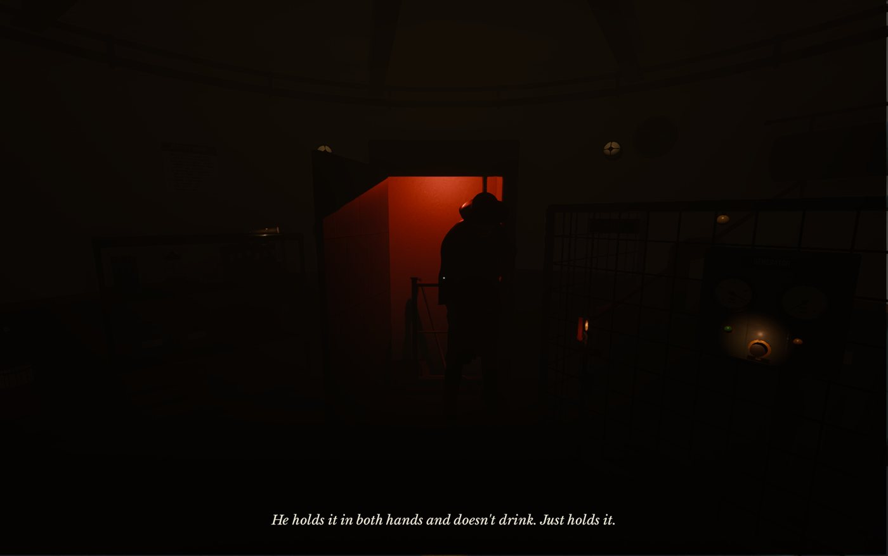

macOS 11 или по-нова. Windows 10 или 11 (изданието е експортирано, без изпитване на компютър с Windows). Около 400 MB свободно място.
Деинсталиране: преместете приложението в Кошчето. Подробности – във файла README.
Трейлър, 1:17. Глас на разказвача: elevenlabs.io.
Автор: [[АВТОР: трите имена]]
[[училище, град]] · [[клас]]
[[email]]
Двигател Godot (MIT) · Blender · текстури Poly Haven, Freesound, Blender Studio (CC0) · шрифтове Libre Baskerville и Source Sans 3 (SIL OFL). Музика: авторът.


Вие сте Калъм Маккей, главен пазач на фара North Point Light. Нощта е на 14 срещу 15 ноември 1971 г. и над Хебридите бушува буря.
Поддържате лампата да се върти, генератора да работи и акумулаторите да са заредени. По радиото и радара превеждате рибарските лодки през рифовете.
Малко преди полунощ глас по канал 16 назовава името на траулер, който е потънал на скалите под същия този фар преди точно осемнайсет години. Преди разсъмване някой ще се качи по стълбата.


Без озвучаване с глас: диалозите са текст със синтезиран звук на радиовръзка, а музиката е авторска.
Краят зависи от две решения: дали на разсъмване ще запишете в дневника истината, или ще оставите лъжата, и дали последният кораб ще мине през рифовете.
| Корабът е спасен | Корабът е загубен | |
|---|---|---|
| Истината | Correction | Heard Together |
| Лъжата | Nothing to Report | Light Exhibited Throughout |

Игра за отговорността, истината и честните записи, от които зависи безопасността в морето.